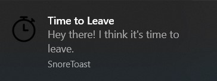
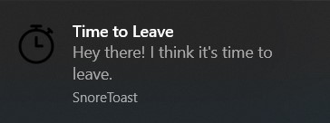

Hi
I'm Casey, and this is a selection of things I've worked on.
Projects
Projects I've made or contributed to.
Time to Leave
Time to Leave is built on Electron, Bootstrap, and jQuery. The majority of my contributions have been to the front end, and to a lesser extent javascript. Tests are written using Mocha and Sinon, and functions are programmed based on those tests.

A work time-clock that reminds you to go home. Using a punch-in punch-out system, TTL takes your lunch time and other factors into account, reminding you when it's time to leave.
In the Workday Waiver Manager, you can account for days off, sick days, and other times you might be off the clock for a day.
 

Log the time you started working today, and the program will compute what time you should leave the office, considering the time you spent on lunch. When it's time, the program will notify you.
Users can set a number of preferences via the Preferences Manager, configuring working days, work hours, lunches and breaks, and whether notifications are wanted.

Time to Leave works on MacOS, Windows and Linux, and you can download it here. Contributions are welcome, and there are many other developers to work with on the discord server. You can find the official page here.